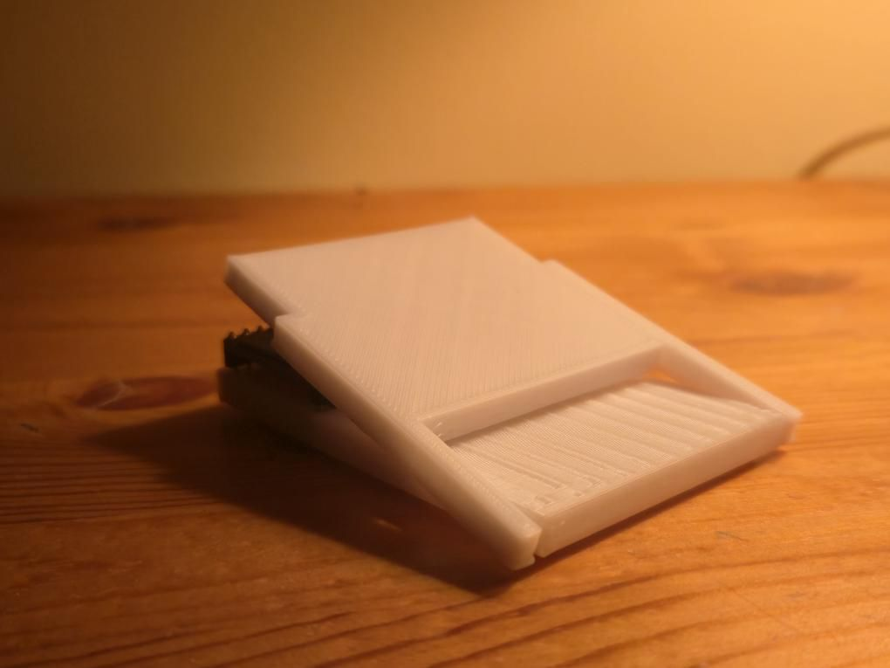
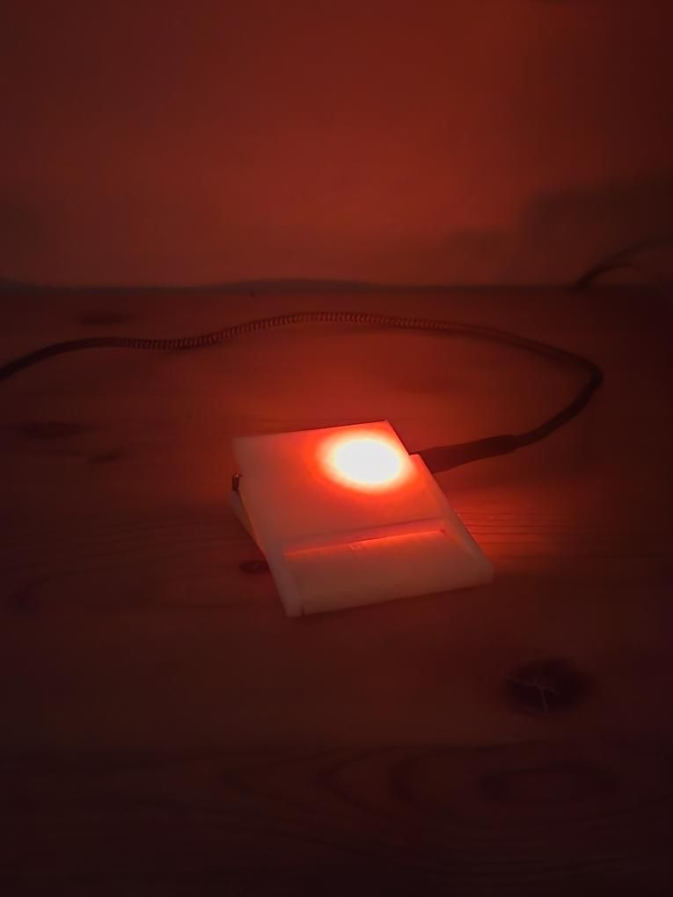
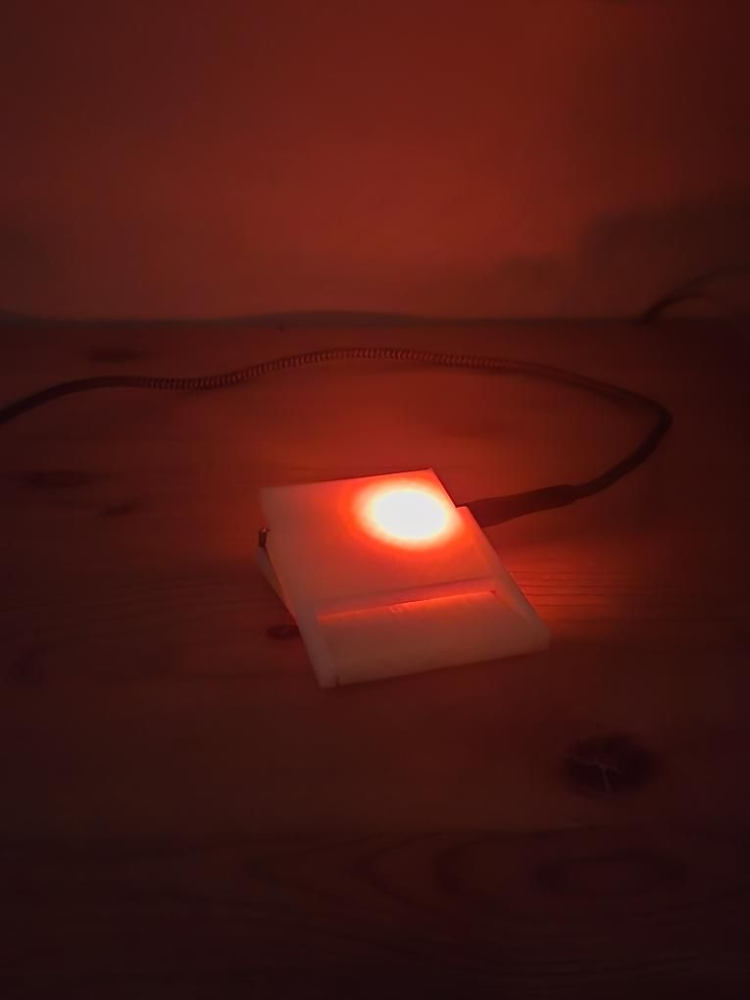

Simple Wireless Footpedal
As a violinist, I participate in many different auditions. The process typically entails standing in front of a judge and playing pages and pages of music excerpts.
When covid came around, auditions had to be held virtually. This meant I would have to record virtually and under a time constraint. Flipping the pages took a lot of time, so I came up with a quick prototype of a foot pedal to flip digital music pages on my laptop.
I took two sheets of tinfoil, hooked them up to the esp32 gpio, and had it spoof a wireless Bluetooth keyboard. Each time the sheets were pressed together, the right arrow key would be sent and the digital music would advance to the next page.
Later this evolved into another quick prototype. I 3d printed two pieces, one was a platform to hold an ESP32 microcontroller, and the other would hinge on the first one. After gluing a button to the base, the top half would rest on the button. Pressing down on the top half activated the switch. Thats really all the elements to a footpedal.

I used this footpedal for many other things, like using it to activate macros on my laptop. Simply having more control opens up a lot of possibilities. The fact that this pedal can be routed to wirelessly do anything is very helpful.
 
